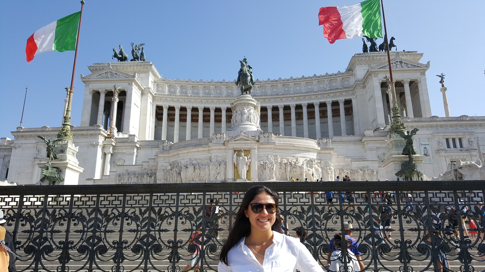

Wine
Being Italian, wine is a huge part of my family’s culture, so wine is a must everywhere we go.
Climbing Shoes

I always carry my climbing shoes with me in hopes that I find a good rock to climb!
Coffee
If I don’t start a day with coffee, I probably won’t be able to drag myself out of bed. It’s a necessity!
Aeropress
If I’m going to need coffee everyday, I might as well make the best cup possible using my beloved Aeropress.
Baseball Glove
One of my favorite pastimes is playing catch with my friends! I always carry my glove and a baseball in case I have time to play catch.
Cubs Jersey
One of my most prized possessions is my Anthony Rizzo jersey. It’s my first real jersey that I got myself.
"W" Flag
You never know where you’ll be when the Cubs win! I have to have my “W” (win) flag with me so I can fly it whenever the Cubs win!
Camera
I love capturing memories with my Canon camera. I carry it with me whenever I can and have captured some of the coolest things I’ve ever seen with it.
Sketchbook
Since I became an interior architecture and design student, I have grown to enjoy sketching my own ideas/things around me, so I always have a small sketchpad with me.
Nalgene
I spent a semester in the Rocky Mountains my first semester of college, and ever since then I’ve learned how important it is to stay hydrated. I don’t leave the house without a full liter Nalgene of water!
Sunglasses
It’s a guarantee that wherever I am, my sunglasses are within one foot of me at all times. I have never gone anywhere without my sunglasses and I probably never will.
Hair Tie
I love to keep my hair off of my neck and out of my face, especially because I work with kids, so having at least two hair ties with me at all times (one as a backup in case one breaks) is a necessity.
Coconut Oil Candle
The crazy thing about this candle is that the wax doesn’t get hot when it melts, so you can dip your fingers in it and use it as moisturizer for your hands, feet, etc. It works reall well because of the coconut oil in it! It is available at the Treasure Island Flea Market (visit http://www.treasureislandflea.com/about for more information).
Lost -- The Complete Collection
My favorite TV series is Lost, so, anywhere I am I’ll need a copy of all six seasons of it. I take it very seriously (contact me to discuss theories).
Guinea Pigs
The two, small, fluffy loves of my life, Tina and Louise, are necessary to my survival. They’re sassy, cuddly little fluffballs that are on a strict eat-sleep-eat-sleep schedule. What’s not to love?
Drumsticks
I love to keep my drumsticks with me and keep a beat on any surface I can find.
Earbuds
Music is a huge part of my life, so of course I love to have a way to privately enjoy my music anywhere I am. I always carry earbuds with me for easy access to the music that I love to listen to so much!
Suzy the Miata
My other most prized possession is my car, Suzy. She’s a manual Miata and I can’t imagine life without her.
Chapstick
Everyone who knows me knows that if they ever need chapstick when they’re around me, they’re in luck. I always have at least one tube of chapstick with me!
Favorite Blanket
This blanket is so soft that it can put me to sleep in an instant anywhere I am. I wish it was acceptable to carry a blanket around 24/7 because I hate leaving this blanket in my bed every morning.